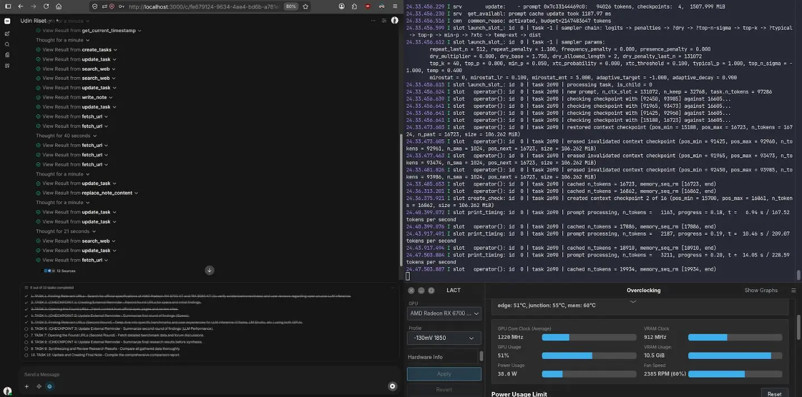

Experiment 003
StableAutomation agent workflow for business research needs.
What does it actually take to optimally use AI as an autonomous research assistant? Is it just the model? As it turns out, no.
System Requirements
MCP Tools
Scrapling
Jinja
Custom
System Instruction
Deterministic
Backend
ROCm Native
OS
Ubuntu 26.04 LTS
Inference Engine
Ollama
Frontend UI
Open WebUI
Model
Gemma-4-26B-A4B-Q4_K_XL-GGUF
Context
262144
Status
Stable
Screenshot

Visualization
Output quality based on system optimization.
Output quality is measured by coherence between the output and the original request.
Abbreviation Glossary
- MCP
- External MCP tools
- RAG
- Retrieval-Augmented Generation for domain-specific document understanding
- KVCM
- KV Cache Management
- LP
- Layer Placement
- DSP
- Deterministic System Prompt
- FTD
- Fine Tuning Domain
For those unable to interpret the data from a technical standpoint, here is the conclusion: here is the conclusion
This experiment showed that getting an AI to perform complex business research isn't simply a matter of using a more powerful model.
A useful AI system needs more than a model. It needs the right knowledge, the right tools, a way to keep track of what it has learned, and a workflow that allows it to check and correct its own work.
In this experiment, the initial setup was not enough. As the research became longer and more complex, the system began losing coherence. Instead of replacing the model, I optimized the entire system around it.
The result was a workflow capable of performing a complex research task through 33 tool calls, with approximately 99% tool-call success, self-correction enabled, and a complete research process taking roughly 51 minutes from a single request.
The important takeaway is that AI capability doesn't come from the model alone. It comes from how the entire system is designed around it.
A model is the engine. The real capability comes from the machine built around it.
Experiment Details
My challenge is figuring out how to enable an LLM to understand my research needs, particularly within the context of business requirements research.
When conducting research, we humans require an understanding of the business domain and the necessary tools such as business documentation or prior work experience (for foundational knowledge) and web browsers (as the operational tool). Yet, it goes beyond that; we must be able to interact with website elements, take research notes, and synthesize the findings. The same applies to LLMs; my reasoning leads to the conclusion that AI requires tools, business documents, and an iterative process regarding the specific business being researched.
I provide comprehensive business documentation known as RAG in the world of LLMs along with the right tools. I then build an integrated system that combines RAG, external MCP tools (for browsing and data fetching/web scraping used by the LLMs), and a notes function.
Based on the tests I conducted, it turns out that RAG, external MCP tools, and Notes alone are insufficient. Midway through the research process, the model loses its ability to maintain short-term context memory because the prompts being processed are extensive and numerous. Therefore, the entire interconnected system requires optimization: RAG, MCP tools, KV cache management, layer placement, and finally deterministic instructions (system prompts) that the model can easily grasp without stifling its creativity.
An additional step can be taken if necessary (domain-specific fine-tuning using a private dataset rather than a public one). If this is done, you will obtain output that precisely matches your requirements.
When all these elements come together as a unified whole, the results are highly effective, even if the process takes a bit longer. However, this is a reasonable trade-off, considering that the work is being performed by local LLMs on consumer-grade hardware rather than by massive frontier models with unlimited resources.
You can review the screenshots I provided earlier. They allow you to assess various aspects such as token usage, the number of tool calls made per request, and the number of URLs or websites accessed before the final output is generated. I have also included charts illustrating how the overall system configuration optimizes results; for instance, comparing the model's coherence when using only RAG and tools versus the performance gains achieved by adding KV cache management optimization, and so on.
Workflow Complexity
33 tool calling
Tool Success Rate
~99%
Total Research Time
~51 Minutes On 1x Turn
Self-Correction
Active
Only after everything is optimized as a unified whole can truly optimal results be realized. The output is spot on — adhering to instructions and incorporating self correction, all achieved with just a single request.
To achieve optimal results, I shouldn't keep thinking that "this model lacks sophistication" or "it turns out the model isn't that good." That mindset is actually flawed because it relies on a perspective limited to a single environment. In contrast, when looking at current AI applications such as ChatGPT, Claude, Gemini, Qwen Studio, and others — engineers don't focus solely on the "model" itself, they consider the entire operational infrastructure, recognizing that the model is just one of many components requiring optimization.
The example I have demonstrated in this experiment represents just one of the many existing types of workflow agents. If you wish to use this approach, ensure you fully understand your environment.
FAQ
Frequently Asked Questions
Why wasn't RAG + MCP tools enough? ▼
At 33 tool calls the model lost short-term memory — coherence dropped to 58%. Adding KV-cache management and deterministic system prompt brought it to 87-99%.
What made the final workflow hit 99% tool success? ▼
The full chain: MCP + RAG + KVCM + Layer Placement + Deterministic Prompt + Fine Tuning Domain. Each added 5-15% quality.
How long does one research run take? ▼
About 51 minutes for 33 tool calls on consumer hardware (Gemma 26B via Ollama, local) — slower than frontier API but with self-correction active and fully local.